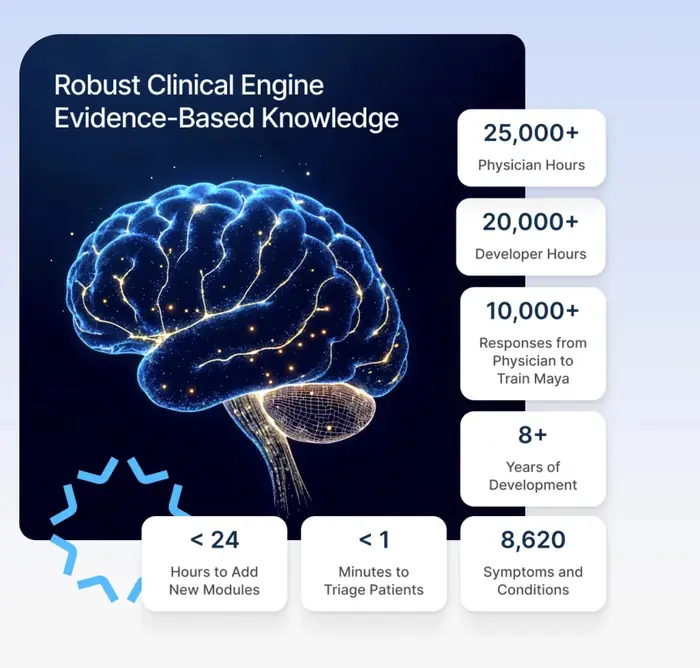

Clinical judgment AI can follow.
LLMs give AI a voice. Maya gives it clinical judgment you can sign off on. For over 10 years, MayaMD has built its own method for capturing how clinicians decide and turning that judgment into logic machines can execute. It is the foundation under everything we build, not a wrapper around a language model.

![]()
Built to reason the way clinicians do.
Maya is not a symptom checker. It is a general model of how experts decide, with two engines that match the two ways clinicians reason, plus the rules each institution adds on top. Every conclusion carries its reference.
Branching clinical algorithms
Chains of questions and answers where conditions can combine several answers, age and sex, medications, history, location and the institution. Scores add points per answer and map the total to risk bands. Crisp rules give the same answer every time.
Evidence, weighed like a clinician
Each symptom links to its possible causes, 416 for chest pain alone, each with a prevalence class, age and sex rules and a pretest probability. Each finding shifts the odds: pressure-like chest pain makes coronary disease more likely, and absent findings make it less likely.
Institutional logic, versioned and auditable
Each organization's thresholds and escalation rules become explicit logic it owns, cited to the source. Built for version control, so it's clear which logic applied when.
The language model talks. Maya decides.
Language models are fluent, but they improvise. Given a protocol, they treat it as a suggestion. In the Maya Engine, decisions come from approved clinical logic with a source behind every step. The LLM asks and explains.
Patient or care team
Answers, symptoms and context
Asks and explains
Natural conversation on any channel
Decides
An approved rule fires, with its source cited
Next step
The next question or the right care pathway
The model never chooses the clinical path. Every decision traces to an approved rule and its source.
The agent talks well. Nobody can sign off on how it decides.
Every organization deploying AI agents hits the same wall. Four gaps cause it, and prompts or document search fix none of them.
Not repeatable
The same case can get a different answer on a different day, or after a model update.
Not your institution's logic
A hospital's sepsis pathway or a clinic's triage rules live in PDFs and in senior people's heads. Pasted into a prompt, they become a suggestion, not a rule.
Not auditable
After a bad outcome, nobody can show which rule fired, which source it came from or which version was live that day.
Not calibrated
A model can't say how likely each possibility is in a way an expert would stand behind. It sounds confident whether it is right or wrong.
The usual fixes treat symptoms. Retrieval finds the right paragraph but still lets the model interpret it. Fine-tuning bakes knowledge in where nobody can inspect or update it. Output filters block bad answers but don't produce good decisions. And even a perfect model can't prove which approved rule it followed.
AI drafts the logic. Experts approve it. Maya runs it. The LLM just talks.
Guidelines, institutional protocols, payer policies and expert walk-throughs become structured, executable pathways. A complex pre-op pathway took about four hours to build. The engine already holds 400+ clinical algorithms, evidence rules that weigh every finding, and translation tables for about 20 languages, and every new pathway reuses that shared vocabulary, so each one is faster to build than the last.
AI drafts the logic
Questions, branches, scores and evidence weights are drafted from the source, with a citation on every step.
Clinicians approve it
A clinician reviews the pathway as readable logic before it runs, and every decision traces back to the rule that produced it.
One logic, inside and outside your walls
The same approved logic guides case managers, nurses and MAs step by step, and reaches patients through voice, two-way text and outreach.
Guardrails against hallucination
Structured logic, not prompts
Protocols live as explicit questions, branches, scores and rules, not as text in a prompt the model can reinterpret. The LLM asks and explains; the decision comes from that logic.
Constrained choices
Where judgment is required, the model can choose only among the options the logic allows. It cannot invent a new path.
Fixed safety rules
Red-flag symptoms always trigger urgent pathways, and no patient is ever directed to no care.
Traceable decisions
Every decision traces to the rule that produced it and the source behind that rule, so there is nothing to take on faith.
Why healthcare organizations need an engine, not just a model.
Clinical criteria and triage protocols have been licensed for decades as content people read. None of it is logic an AI can execute, customize to your institution and audit. Maya is that layer: a system of record for how your organization decides, used by every AI tool you deploy.
Consistent care on every shift
The same protocol is often applied differently by each nurse, shift and site. Executable logic delivers it the same way to every patient.
AI you can actually deploy
Organizations want AI to scale their teams but can't let a model improvise clinical decisions. Their own protocols, made executable, become the guardrails.
Ready when guidelines change
Update a protocol once and it changes for every team and every channel, with a clear record of which logic applied when.
Expertise that scales without headcount
Your best clinicians' judgment reaches every patient by phone, text and outreach, without adding staff in a nursing shortage.
Built for value-based care
Readmissions, penalties and shared savings depend on reliably delivering what works. Consistency is the business model.
Explainable by design
The EU AI Act calls for documentation, logging and human oversight of high-risk AI, FDA guidance favors decision support whose basis clinicians can review, and CMS requires payers to give specific reasons for prior authorization denials. Explainable logic meets all three; an LLM alone can't.
The right level of care, the first time.
Symptom triage is where the Maya Engine has the longest track record. It asks the questions an experienced clinician would, weighs each answer against its clinical knowledge base and recommends the right level of care, from a telemedicine visit or clinic appointment to urgent care or the ER. Emergencies go straight to the ER. Lower-risk concerns are routed to a clinician instead, so patients avoid ER visits they don’t need without ever being left without care.
Deployment figures are from a past virtual-triage program built on the Maya Engine. Study: Delshad S, Dontaraju VS, Chengat V. Cureus 2021;13(8):e16956.
One engine. Products built on top.
MayaRED
All 13 steps of Project RED with teach-back, plus 30 days of follow-up after discharge.
Transitions of care →02 · REMOTE CAREChronic care programs
APCM, PCM, RPM and BHI, run on the same approved clinical logic.
Remote care →03 · CLINICAL AI AGENTPre-visit intake
A conversational agent that takes the history by following clinical logic and writes the note from what the patient said.
For physicians →